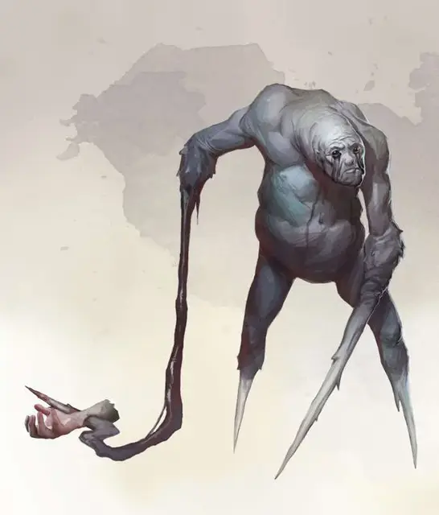

Одиночество
The Lonely
Средний Монстр, нейтрально-злой

Класс Доспеха 16 (природный доспех)
Хиты 112 (15к8 + 45)
Скорость 30 футов
| мод | спас | ||
|---|---|---|---|
| СИЛ | 16 | +3 | +3 |
| ЛОВ | 12 | +1 | +1 |
| ТЕЛ | 17 | +3 | +3 |
| мод | спас | ||
|---|---|---|---|
| ИНТ | 6 | −2 | −2 |
| МДР | 11 | +0 | +0 |
| ХАР | 6 | −2 | −2 |
Чувства тёмное зрение 60 футов, пассивное Восприятие 10
Языки Общий
Опасность 9 (5000 опыта)
Бонус мастерства +4
Среда обитания Город, Горы, Побережье, Подземье, Пустыня
Особенности
Сопротивление. урону дробящий, колющий и рубящий пока находится в области тусклого света или тьмы
Телепатическая пиявка. В начале хода Одинокого каждое существо в пределах 5 фт. от него должно преуспеть в спасброске Мудрости Сл 15, или получить 10 (3к6) урона психической энергией.
Увеличивающаяся компания. Одинокий получает Преимущество на броски атаки, если в пределах 30 фт. от него есть как минимум два других существа. В противном случае он получает Помеху на эти броски.
Действия
Мультиатака. Одинокий совершает атаку рукой-гарпуном и использует скорбное объятие.
Рука-гарпун. Рукопашная атака оружием: +7 к попаданию, досягаемость 60 фт., одна цель. Попадание: 21 (4к8 + 3) колющего урона, и цель становится Схваченной (Сл высвобождения 15), если она Большого размера или меньше. У Одиночества две руки-гарпуна, каждой из которых он может схватить по одному существу.
Скорбное объятие. Каждое схваченное Одиночеством существо должно пройти спасбросок Мудрости Сл 15. Существо получает 18 (4к8) урона психической энергией в случае провала, или половину урона в случае успеха. В обоих случаях Одинокий подтягивает существо на 30 фт. к себе.
Описание
Повсеместная тоска Царства Теней порой порождает странные воплощения мрачной сущности плана.
Угнетённые воплощают формы мучений, что свойственны в этой тёмной местности, а их внешность наводит ужас на тех, кто встретит их на своём пути.
Мерзкое воплощение эмоций. Каждый угнетённый олицетворяет различные проявления отчаяния, либо страдания. Одни отражают злость, другие – принимают физическую форму одиночества. Их природа служит подсказкой, как и к пониманию того, как они стали такими сильными, так и к их устранению.
Потворствование негативным эмоциям, что воплощает каждый угнетённый, только увеличит его силу и опасность. Если не поддаваться таким эмоциям, то сила угнетённого слабеет, и можно с лёгкостью избавиться от них.
Одиночество. Тоска от замкнутости поражает многих существ, скрывающихся в Царстве Теней, но потребность в компании никогда не проявлялась намного сильнее в таких чудовищах как Одиночество. Когда эти угнетённые замечают других существ, они очень остро ощущают потребность в общении, и потому запускают свои гарпуновидные руки, чтобы подтащить жертв поближе.